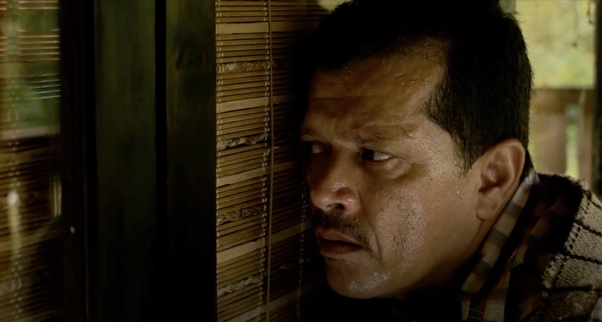

El Fin de una Dictadura (Dead Dictatorship) - Soundtrack
JP Carrascal (2017)
Original soundtrack for the short film 'El Fin de una Dictadura' by Alex Quezada

A short zombie film directed by Alex Quezada. In the director's words, 'a reflection about unpunished events of recent Colombian history'. I composed the original soundtrack.